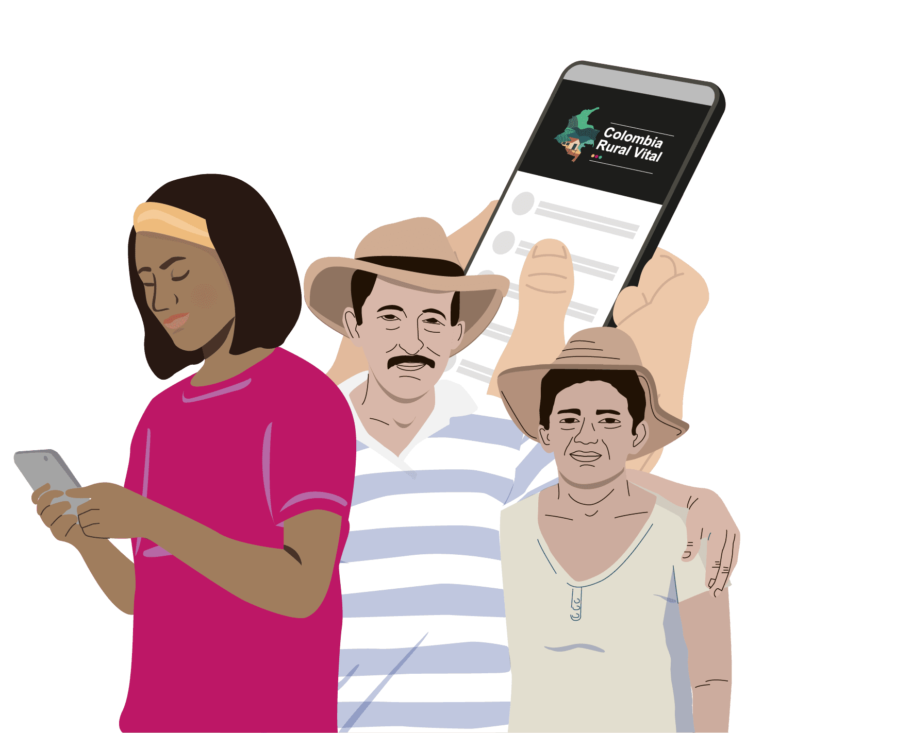

Formularios de
Entrevista Vital
Los formularios de entrevista vital le permiten al personal extramural (auxiliares de enfermería – Jefe de enfermería), realizar la captura y recuperación de información de manera estandarizada.
Los formularios son dos y se denominan "Entrevista Vital de Nacimiento" y "Entrevista Vital de Defunción".